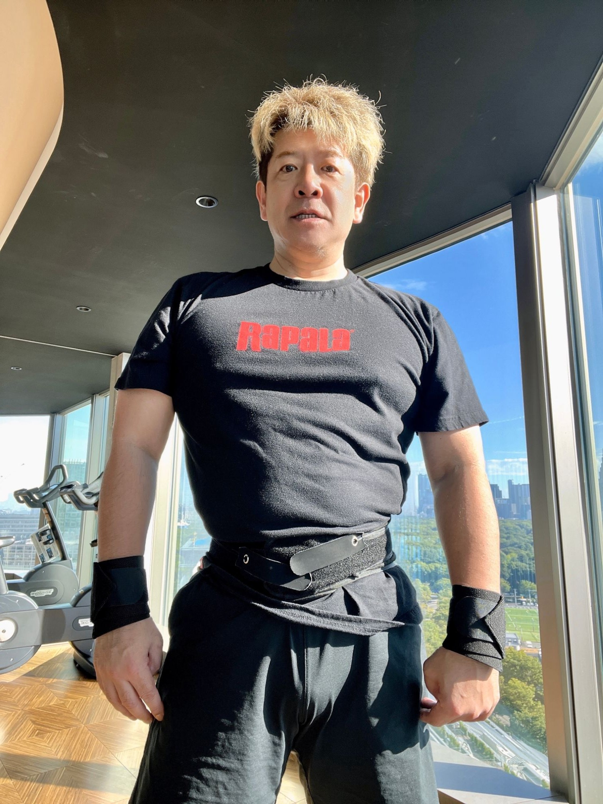
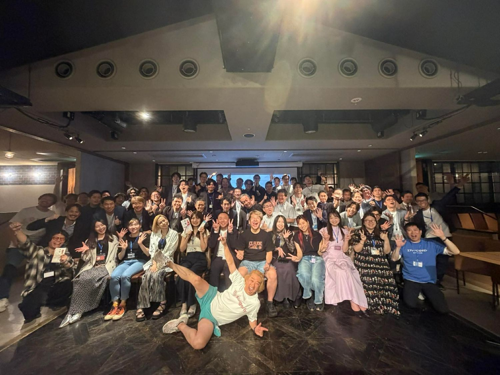
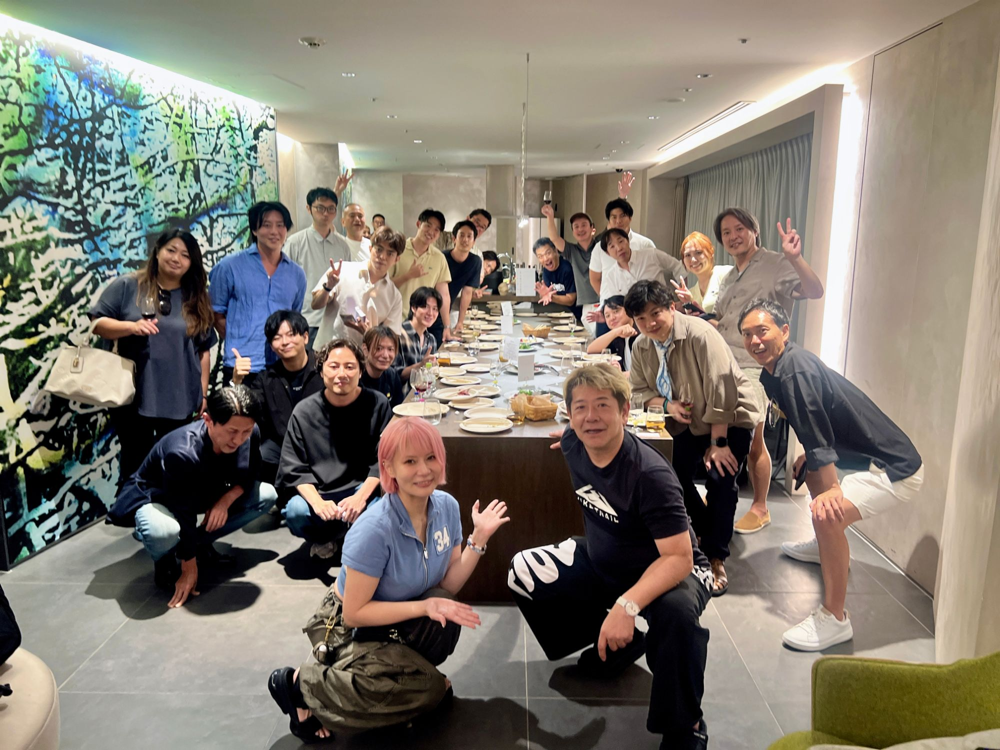
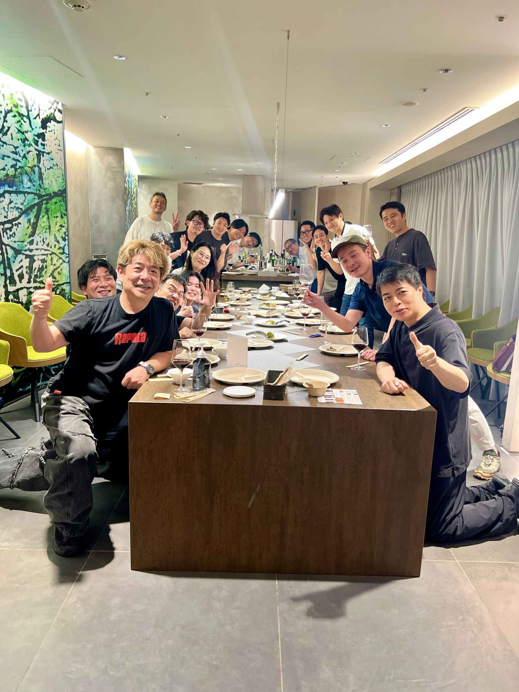
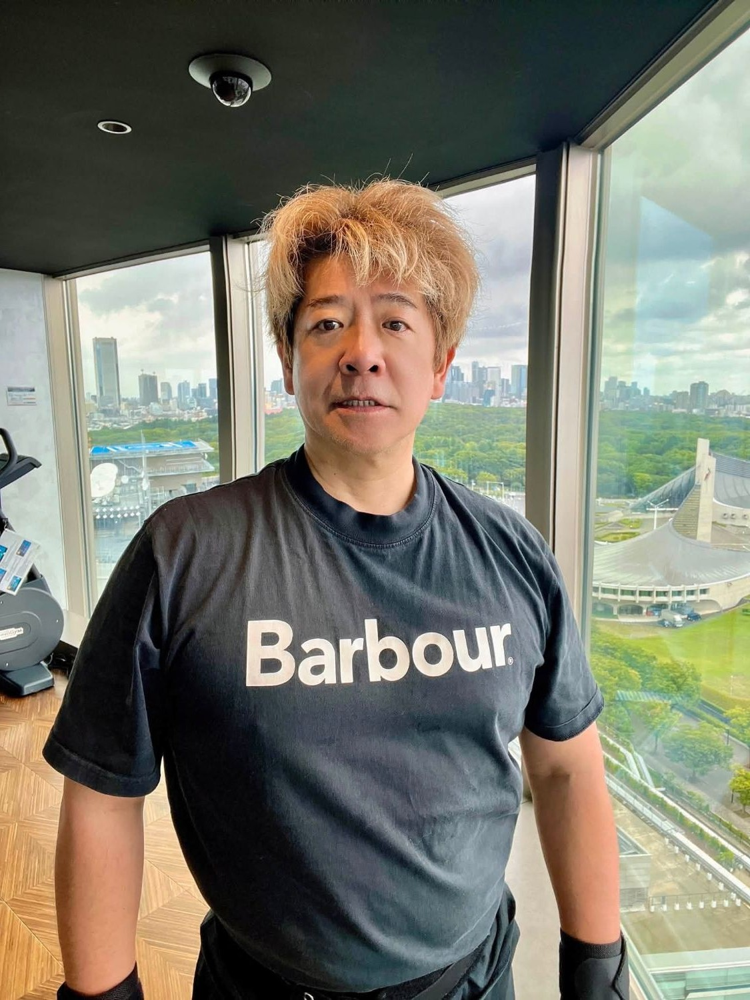

会うMeet
商談も、会食も、信頼のはじまり。
会うことでしか伝わらない温度がある。
A LIFE IN PROGRESS
AKIHIRO SUZUKI
株式会社コミクス 代表取締役
経営も、からだも、日々の積み重ねから。
人と出会い、新しい可能性をひらいていく。

PROFILE
鈴木 章裕Akihiro Suzuki
1969年、大阪生まれ。甲南大学法学部卒。
広告代理店で営業を学び、ベンチャー企業の経営を経て、2007年に株式会社コミクスを創業しました。
ミッションは、ご縁をつなぐこと。
営業支援、生成AIの活用支援、経営者同士の出会いの場づくり。人と事業が前に進むきっかけをつくっています。
毎朝のトレーニングも、マラソンも、経営も。
大切にしているのは、決めたことを続ける力です。
MY PRINCIPLES
筋トレにBIG3があるように、
経営にも、自分が向き合うべきことがある。
商談も、会食も、信頼のはじまり。
会うことでしか伝わらない温度がある。
価格、採用、撤退。AIは材料を出す。
最後の責任は、社長が持つ。
事業の価値を、自分の言葉で届ける。
大切な場面では、社長が前に出る。
BIOGRAPHY

1969
甲南大学法学部卒業。関西で育った原点は、いまも変わらず。
営業の原点
同期30名のうち、1年後に残ったのは数名。タイに1か月滞在して契約を獲るなど、現場で営業を学ぶ。
2000
アイブリッジに参画。2005年に代表取締役に就任し、社員110名・年商30億円へ。
2007
人と企業のご縁をつなぎ、事業の成長を支える挑戦がはじまる。
2012– 2013
幹部の離反、新規事業の失敗。すべてを開示し、信頼を積み重ねてV字回復へ。
事業の転換
事業譲渡は累計4億4,000万円。70名の実行部隊から、パートナーと価値をつくる体制へ。「SaaS事業者のかかりつけ医」を目指す。
2025—
自ら使い、業務を変え、その実践を経営者へ届ける。いまも、挑戦の途中です。
「やる」と決めたことは、
必ずできるまでやる。
成長が全てを癒す。いつも笑顔で。チームを大切にする。
WORK / AI MANAGEMENT
相談するAIから、納品するAIへ。
調べる、書く、まとめる、つくる、分析する、整える。
日々の実務をAIと分かち合い、経営者が本当に向き合うべき仕事に時間を使う。

A NOTE FROM MY PRACTICE
2026年8月・自社基準による実測
1週間の成果物689件を人手作業時間に換算したスナップショットです。「15.4人分」は自社基準であり、成果を保証するものではありません。
スキル165 / エージェント31 / 自動実行15本 / 外部連携9系統
同時点での直近1か月：提案・診断資料165本（67社分）、PowerPoint 244本、note記事97本、生成成果物4,668件。


BUSINESS
コミクスの取引実績 1,825社2026年6月末現在
統合型営業支援ソリューション。導入63社。
この事業について相談するLINEで質問するだけ、トップ営業を育成。導入122社。
この事業について相談する業務の生産性向上を伴走で実現。直近1年で277社を支援。
この事業について相談する競合優位性のある企業に向けた営業支援。累計68社。
この事業について相談する経営者限定、マンツーマンでAI活用に伴走。導入74名。
この事業について相談するプロ人材15万人のデータベース。558社に提供中。
この事業について相談する1,100講座以上。生成AIで組織の生産性を最大化。
この事業について相談する完全招待制。経営者のためのコミュニティ。
この事業について相談する経営者限定。いつでも経営相談とプレミアム会食。
この事業について相談する各事業の実績は、2026年8月時点の掲載値です。
主催イベント：ものすごいベンチャー展（動員21,139人）、地方創生サミット、ものすごいHR展、AI & ChatGPT展。
ENCOUNTERS
経営者同士が、本音で語れる時間を。
毎月の会食から、次の事業のきっかけが生まれています。


PERSONAL JOURNAL
バーベルと、音楽と、家族と。
日々を楽しむことも、全力で。





AIに仕事を渡して取り戻した時間は、家族と過ごす。
会社が大切にする「六方良し」（株主・取引先・パートナー・社会・社員・環境）と同じように、
人生の真ん中には、大切な人たちがいます。
CONTACT
AIのこと、経営のこと、これからの事業のこと。
まずは、お話ししませんか。